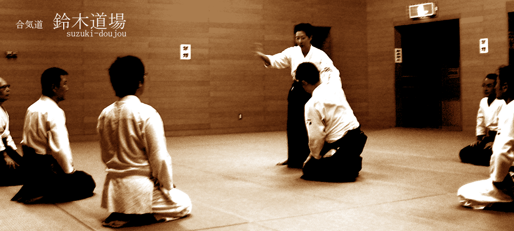

お知らせ
鈴木道場合宿のご報告＆参加者コメント(13/08/23更新)
東京都合気道連盟主催演武大会のお知らせ(11/9/24更新)
新宿スポーツセンター3月30日中止のお知らせ(11/3/28)
東京都合気道連盟主催演武大会 演武大会を終えて(10/11/22更新)
鈴木順子師範特別稽古 in たきがしらのお知らせ(10/10/29更新)
東京都合気道連盟主催演武大会のお知らせ(10/10/5更新)
平成22年度全日本合気道演武大会のお知らせ(10/4/3更新)
3/13の鈴木道場のお稽古に奈良の合気道正勝会から2名の方が参加されました。(10/3/16更新)
鈴木順子先生の「七段位」を祝う会（記念合同祝賀会）会場の変更(10/3/3更新)
鈴木順子先生の「七段位」を祝う会（記念合同祝賀会）のお知らせ(10/2/28更新)
ソニー・ヒューマンキャピタルの社内報にソニー合気会所属の城出さんの記事が掲載されました。(10/2/10更新)
鈴木順子師範の七段昇段について(10/2/10更新) 当日の集合写真を追加しました。
無料体験のお知らせ <9月の無料体験は9/14(月)です。>(09/8/30更新)
無料体験のお知らせ <8月の無料体験は8/3(月)です。>(09/8/1更新)